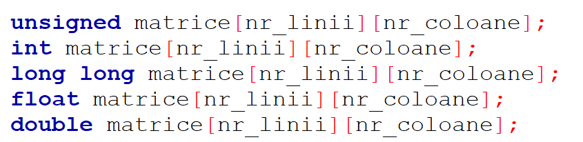
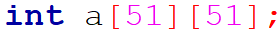
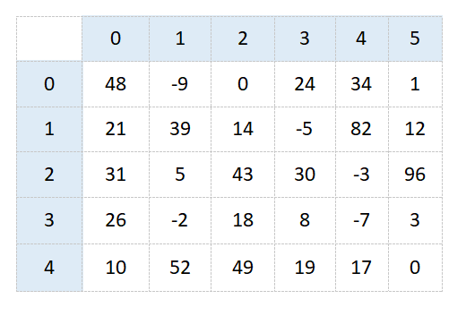
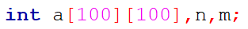
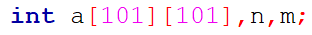

În limbajul de programare C++, tablourile bidimensionale reprezintă o structură de date standard, folosită pentru a stoca o colecţie de date de acelaşi tip, organizate pe linii şi coloane. Practic, o matrice este extinderea la două dimensiuni a unui vector.
Dintr-o perspectivă ușor diferită, tablourile bidimensionale sunt structuri de date alcătuite din elemente de același tip, organizate pe linii și pe coloane. Astfel, fiecare element are doi indici: un indice de linie și un indice de coloană
Astfel, declararea lor în C++ este asemănătoare cu cea a vectorilor, dar trebuie precizate două dimensiuni maximale, ce reprezintă numărul de linii şi de coloane al tabloului:
De exemplu:
Astfel, o matrice cu 5 linii şi 6 coloane poate arăta ca cea de mai jos.
Matricea are:
Astfel, pentru a ne referi la un element al matricii trebuie să ne asigurăm că indicii se află în intervalul precizat. De exemplu, a[3][5] este o expresie corectă, ce are ca valoare 3, pe când a[-1][10] este o expresie greşită.
Implicit, tablourile bidimensionale, la fel ca cele unidimensionale, sunt indexate de la 0 (liniile sunt indexate de la 0 la n-1 și coloanele de la 0 la m-1).Putem însă să ignorăm prima linie și prima coloană, și să considerăm tabloul indexat de la 1, adică liniile sunt indexate de la 1 la n, iar coloanele de la 1 la m. În această situație matricea trebuie declarată corespunzător.
De exemplu, pentru o matrice cu 100 de linii și 100 de coloane indexată de la 0 declararea va fi:
iar pentru o matrice similară indexată de la 1 declararea va fi:
